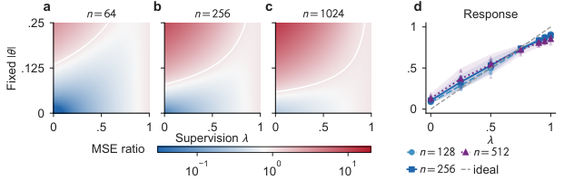
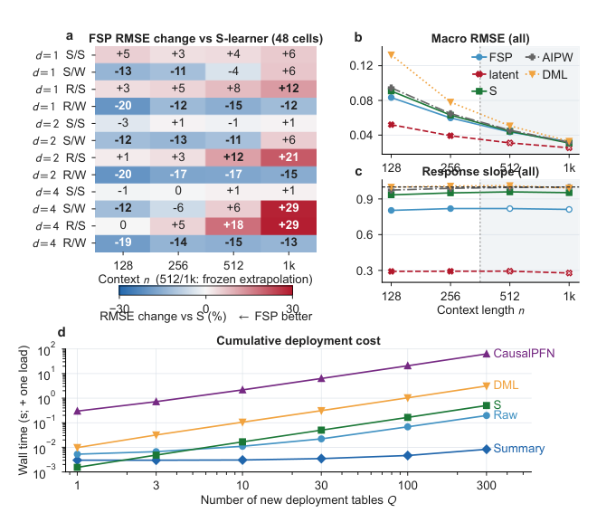
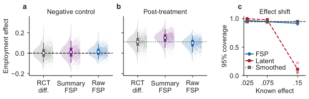

All 21 numbered results are mapped to compiled Lean 4.32 declarations, using Git-pinned Mathlib and a formalized Berry–Esseen theorem, with a kernel-verification record.
Abstract
Causal tabular foundation models amortize effect estimation across synthetic mechanisms, but latent-effect supervision rewards posterior shrinkage rather than encoding the repeated-sample response needed in a fixed deployment population. We introduce fluctuation-supervised pretraining (FSP): each synthetic table is labeled by its average treatment effect plus its efficient influence-function fluctuation; deployment remains a frozen forward pass. Along the path $T_{λ,P}=θ(P)+λP_nψ_P$, we prove an endpoint transition: every fixed $λ<1$ retains label ambiguity of order $(1-λ)^2/n$, whereas full fluctuation makes the Gaussian label observable and reduces optimal finite-stratum causal label-prediction risk to order $n^{-2}$. A finite-pretraining bound combines label, network, episode-sampling, and optimization errors; its sampling defect controls fixed-mechanism bias, mean squared error, variance, Gaussian approximation, and, with variance-head accuracy, studentized coverage. Complementary lower bounds separate local $n^{-1}$ ATE risk from the $\log N/M$ excess risk of generic finite-dictionary episode learning. Experiments trace the learned sampling response. Across 24 nonlinear continuous-covariate cells at trained context lengths, continuous-row FSP lowers checkpoint-mean macro RMSE by 7.0% versus S-learner and wins all 12 weak-overlap cells; validation-selected Summary FSP deploys $11.6\times$ faster per table in our warm one-thread benchmark. Under effect shift, matched Raw FSP lowers mean-checkpoint RMSE by 54.2% and teacher defect by 99.0% versus latent-effect supervision, and RMSE by 10.2% versus the released CausalPFN-S checkpoint. Known-effect semisynthesis tests coverage; two randomized-study evaluations show that lower RMSE can coexist with residual attenuation.
Problem
Causal tabular foundation models trained with latent-effect supervision reward posterior shrinkage toward the prior. As a result, they can mis-center repeated-sample estimates of the average treatment effect in a fixed deployment population.
Approach
Fluctuation-supervised pretraining (FSP) labels each synthetic table with its ATE plus its efficient influence-function fluctuation, and deployment remains a frozen forward pass. The authors analyze the label path T_λ, prove finite-pretraining bounds linking the sampling defect to bias, variance, Gaussian approximation and coverage, and give complementary lower bounds. The 21 numbered results are formalized in Lean 4 with Mathlib.

Figure 5 : Changing supervision changes the sampling response. (a–c) Exact Gaussian MSE relative to FSP ( s=.035 , v=1 ); the white contour marks equal MSE. (d) All 105 seedwise coefficients at the typical mechanism: seven targets, five seeds, three context lengths, M=8192 . Lines are means; bands are 95\% across-seed t intervals. Appendix N.1 defines the coefficient.
Results
Every fixed λ<1 retains label ambiguity of order (1-λ)^2/n, while full fluctuation reduces optimal label-prediction risk to order n^{-2}. Continuous FSP lowers macro RMSE by 7.0% versus S-learner across 24 nonlinear cells. Under effect shift, Raw FSP lowers RMSE by 54.2% and teacher defect by 99.0% versus matched latent-effect supervision.

Figure 10 : Complete nonlinear and deployment-cost evidence. (a) FSP’s checkpoint-mean RMSE change relative to S-learner in all 48 continuous cells; blue negative entries favor FSP. Row suffixes denote smooth/rough response (S/R) and strong/weak overlap (S/W). (b–c) Equal-cell-weight macro RMSE and sampling-response slope; the grey region and open neural marks denote frozen extrapolation. (d) Medi

Figure 4 : Frozen transfer trades variance against residual attenuation. (a–b) National Supported Work at n=256 : 1,500 re-randomized-null and post-treatment estimates; white marks are medians and thick/thin bars are interquartile/5th–95th percentiles. (c) Known-effect semisynthesis at n=256 . Appendix N gives checkpoint budgets and protocols.